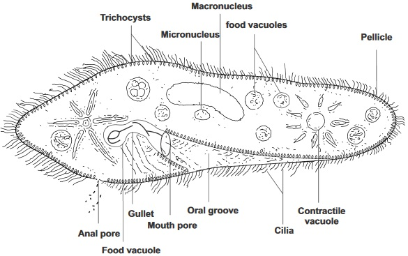
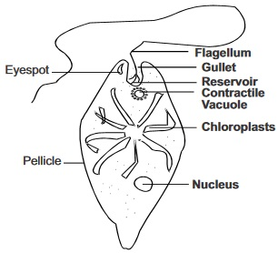
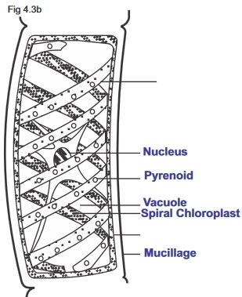
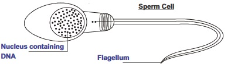

Background Information
The cell has been defined as the simplest unit
of a living thing. They can exist in varieties of shapes.
They can also carry out different functions.
Cell structure: At present the detailed structure
of the cell is that which is observed using an electron
microscope. Structurally, a cell (weather plant cell, animal
or any other) is made up of a covering called cell
membrane (which can be made up of lipids and protein)
it controls what enters or leaves the cells inner living
part called protoplasm.
The protoplasm consists of two parts:
The cytoplasm which is the site for chemical activities in
the cell, and The Nucleus which controls the cellular activities.
The protoplasm of a cell consists of 80% water, 12%
protein, 3% carbohydrate, 3% fats and oil, 2% mineral
salts. It also contains Carbon, Hydrogen, Oxygen, Nitrogen,
Phosphorous, sulphur,calcium, Chlorine, Magnesium Iron, Iodine
and Manganese.
fig4.1a:
A Cell as seen through an electron microscope
fig4.1b:
A Cell as seen through an electron microscope
The Cytoplasm: It is Jelly like and transparent
in its physical form, it contains water, dissolved
organic and inorganic substances.Structurally, the
cytoplasm contains many ultra cellular components
known as inclusions and organelles (meaning little
organs). The cytoplasmic inclusions are temporary
structures such as starch grains and oil globules
while organelles are permanent structures which
determine the function of a cell. A cells function
depends on the number and kinds or organelles
Cell as part of multicellular organism
fig4.1c:Nerve Cell
fig4.1d:Palisade Cell
fig4.1e:Collenchyma Cell
fig4.1f:Red blood Cell
fig4.1g:Sperm Cell
Cell organelles
Functions
1
Mitochondria
Contains enzymes that release the energy
stored in food during cellular respiration.
2
Ribosomes
They are made of nucleic acids and protein
and they function as sites for protein synthesis.
3
Rough endoplasmic
reticulum
Ribosomes are found on their surfaces, they
package and transport protein from one part of
the cell to another.
4
Smooth endoplasmic reticulum
Lipid and steroid synthesis, packing and transport also
5
Lysosomes
They contain enzymes that can digest the cell protein.
They are involved in transport of materials in and out
of the cell.
6
Golgi bodies
They pack and ‘export’ material from the cell.
7
Chloroplast
Found only in autotrophs e. g. green plants it is the site
of photosynthesis in green plants.
8
Centrioles
Found mostly in animals cell. They function in cell
division.
9
Vacuoles
For storage ofe.g. fluid, food molecules, salt or
pigment not in the plastids.
10
Plastids
Food storage or other specialized function (it is only
found in plants and some unicellular autotrophs)
The Nucleus: The nucleus controls cellular activities and also stores hereditary information.
The nucleus is the most important cell organelle. Being enclosed in double-layered nuclear membrane, it
has nuclear pores which allow exchange of materials between it and the cytoplasm. The nucleus contain
chromosomes (which are extended in thread like form called chromatin granule). They contain DNA-the
molecule that contain hereditary information in a code form. The nucleus are involved in protein
synthesis through the nucleoli found in the chromatin.
Cell theory: The cell theory is a generalized knowledge gathered from the works of eminent
cytologists (Scientists who study cell) like Theodor schwann a German zoologist; Matthias schleiden a
botanist;Rodolf Virchow a German biologist and Felix Dujadin a French biologist.
The theory can be itemized in four points
(i) All living things are made up of one or more cells
(ii) The cell is the basic structural and functional unit of life.
(iii) All cells come from preexisting cells by the process of cell division
(iv) A cell contains coded information for its structural and functional development in its
nucleus and this information is genetically transferable
Differences between plants cells and animals cells
Animal cells
Plant cells
1
Covered by thin plasma membrane
Covered by thick cellulose cellwall
2
Little or no vacuole
Large vacuole
3
The cytoplasm fills the cell
Cytoplasm restricted clue to the large vacuole
4
Chloroplasts are absent
Chloroplasts are present
5
Carbohydrates are stored in form
of glycogen granules
Carbohydrates are stored in form of starch granules
5
Centriole present
Centriole absent
Different form in which cell exist
1. Cell as single living unit
examples are paramecium, Amoeba,Englena etc.
fig4.2a: Paramecium

fig4.2b: Euglena

fig4.2c: Amoeba
fig4.2d: Amoeba
fig4.2e: Spirogyra
fig4.2f: Palisade cells
fig4.2g: Parenchyma cell
fig4.2h: Nerve Cell orNeuron
fig4.2i: Sperm Cell
General Questions
1. Write down the name of the first scientist who used the word cell to describe an observation in an organism
2. State the two main types of molecules that make up the plasma membrane of a cell
3. In what cell organelle is the chromatin of plants and animal cells located?
4. What term can be used to describe an organism that consists of
One cell
Many cells?
5. The nucleus is bound by two unit membrane called?
6. In a cell, apart from the nuclear membrane, state another membrane that is semi permeable
7. The cell wall of plant cells is made up of poly saccharide called
8. Write down three names of cytologists whose scientific findings gave rise to the cell theory
9.
is the cell organelle which functions to release energy from food during cellular respiration
10.
in the chromosome contain heredity information in a code form while
are among the chromatins which is involved in the manufacture of molecules with information
for protein synthesis from the nucleus to the cytoplasm.
11. A simple living cell which is able to carry out all the life processes of a living organism is said to be existing as a
Expression Exercise
(1)a State five cell parts that are bounded by membrane
Teacher's attention required
2a Write down within the table below five observable differences between the cell of plant and that of an animal
Teacher's attention required
Plants
Animals
1
2
3
4
5
(b) State two differences between the plasma membrane and the cell wall using the table below
Teacher's attention required
Plasma Membrane
Cell wall
1
2
3. Identify and label each of the diagram fig. 4.3a according to the different forms of existence of the cell each represents
Teacher's attention required
fig4.3a: Chlamydomonas
fig4.3b: Colony of Pandorina

fig4.3c:
fig4.3d:
4. Summarize the cell theory in four points
Teacher's attention required
5. Write down the functions of the following cell organelles
Teacher's attention required
Cell organelles
Functions
i
Ribosome
ii
Lysosome
iii
Chloroplast
iv
Centrioles
v
Vacuole
(b) State three structures that can be found at the nucleus of a cell
Practical Activities
(To be carried out by students if microscope is available) Note: The teacher should first introduce the use of microscope to the students. He should also explain the use of slide and
the cover slip in examminings specimen through a microscope.
Method
(i) Gently peel the onion leaf
(ii) Remove a piece of thin skin from the inside of the leaf
(iii) Place it on a clean slide
(iv) Add a drop of water using pipette
(v) Carefully lower a cover slip onto the onion leaf (or thin skin)
(vi) Observe the leaf cells using the microscope (both low power and high power)
(vii) Repeat the activity using iodine solution instead of water
Question
1. Compare your observation with the diagram below
Teacher's attention required
fig4.4c:
2. In activity 1 step (iv) using water or staining with iodine, which activity gives you a clearer and detailed cellular
feature?
Teacher's attention required
3. Why do biologists stain specimen before observation ?
Teacher's attention required
Activity 2. Examining cells from your cheek
Materials/Apparatus
Clean spatula or toothpick
Pipette
Microscope
Method:
Carefully scrape the inside of your cheek with the broad end of a tooth pick or a
spatula.
Stir the scrapings into a drop of water (introduced using a pipette) on a slide
Carefully lower the cover slip on it
Observe the cells with the microscope
Repeat the experiment using iodine solution or methylene blue instead of water.
Questions
(i) Compare your observation with the diagram below
fig4.4d:
(ii) Distinguish between the features in your observation in activity 2 and that of activity 1.
Activity 1
Activity 2
(iii) Write down one feature you found common to both cells
Test of Practical
Below are diagrams of various cells
Identify the diagrams, write down the form in which the cell exist and write where the cell can be found. Use
the example below:
fig4.4e:
Name :
Form in which the cell exist :
Where it can be found :
fig4.5a:
fig4.5b:

fig4.5c:
Write down the name(s) of cell(s) that perform specialized function(s) among the cells above also label the parts in each
of the diagrams
THE CELL
PAST SSCE QUESTIONS
NOV 1989 Q4a and b
1. (a)i. State one function of plastid to plants
Teacher's attention required
ii Name one plastid founds in plants
Teacher's attention required
(b) State one function each of:
Teacher's attention required
Mitochondrion
Chromosome
NOV. 1990 Q2b
2. Give one function of the Golgi body in the cell
JUNE . 1993 Q5a & b
3. (a) Name the nucleic acid that carries inherited traits.
(b)Name four elements found in the named nucleic acid.
Teacher's attention required
JUNE 1994 Q6
4. Study diagram I and II below and use them to answer Question 4
fig4.6a(i):
fig4.6b(ii): Mushroom
(a) Identify the organisms illustrated in the diagram I and II
(b)State the level of organisations of I and II
(c) State a reason for placing I and II in that level of organization